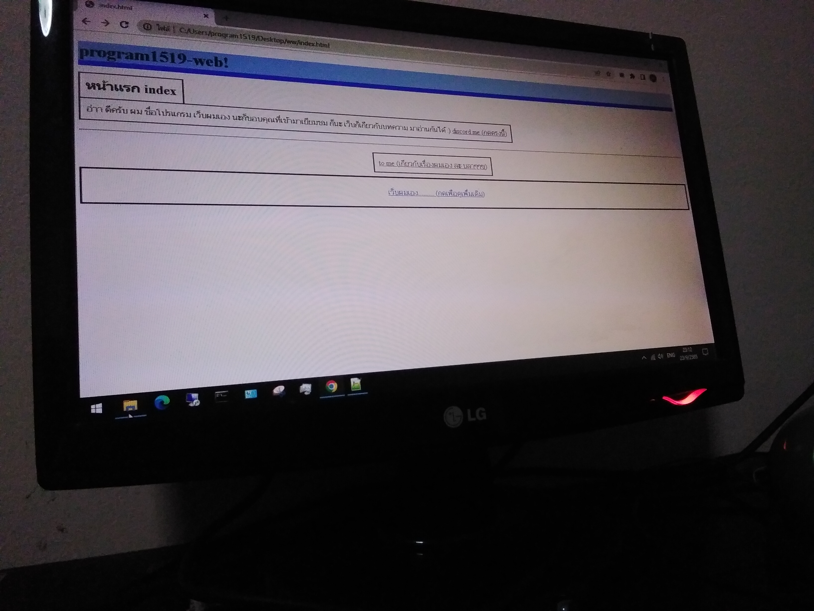

program1519-web!
เว็บผมเอง.........
by program1519 23/9/2565

01.html
เกิดจากผมชอบเรื่อง คอม พวกนี้อะนะ ละอยากสร้างเว็บ ก็ทํามาตั้งแต่ 2021 ละ ศึกษา บลาๆๆ ละเคยทํามาหลายแบบ
ละก็อยากทําเว็บแบบ บทความ แต่ก็รุ้สึกว่าน่าจะทําไม่ไหว เพราะหลายๆอย่างนะ ก็ทําเว็บแบบแนว บล็อก มั้ง แบบ แนวเล่าเรี่องอะ เรื่องอะไรก็ได้ ก็มาเยียมชมได้นออ ee